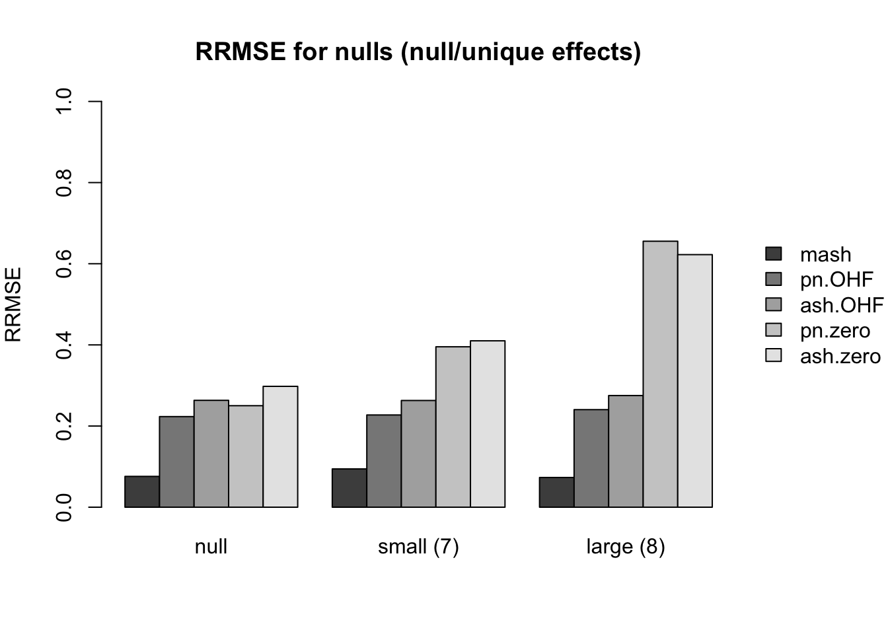
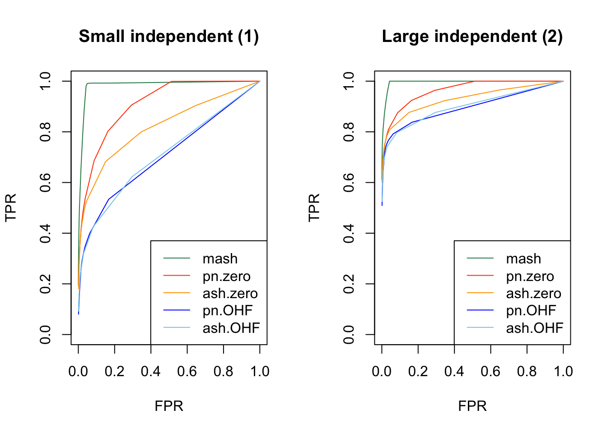
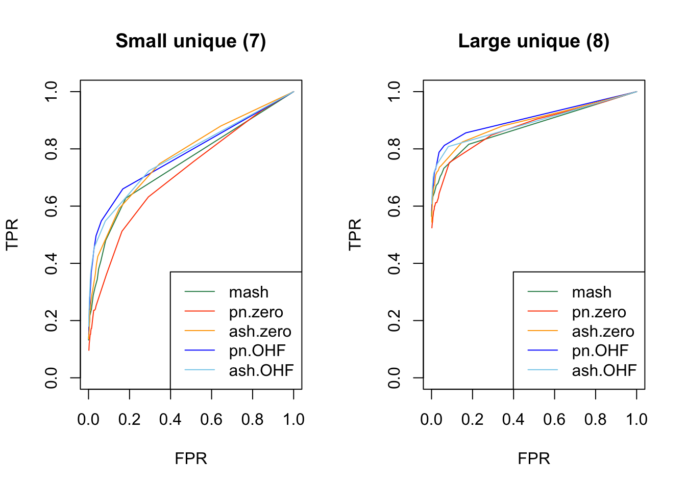
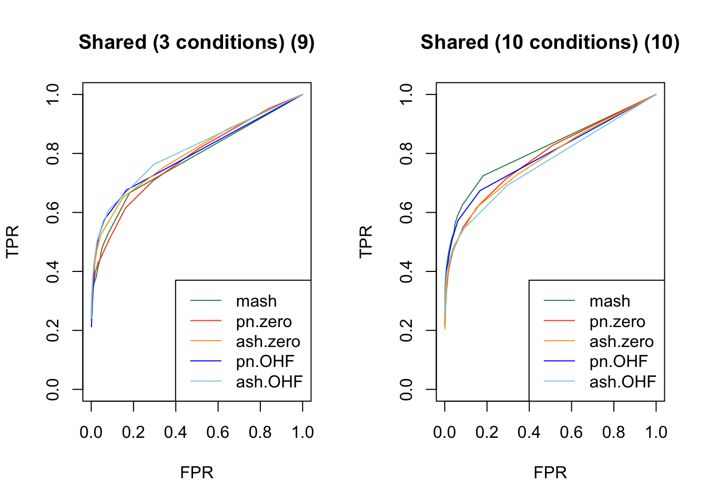
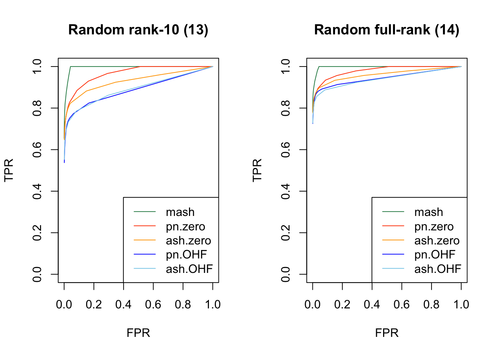
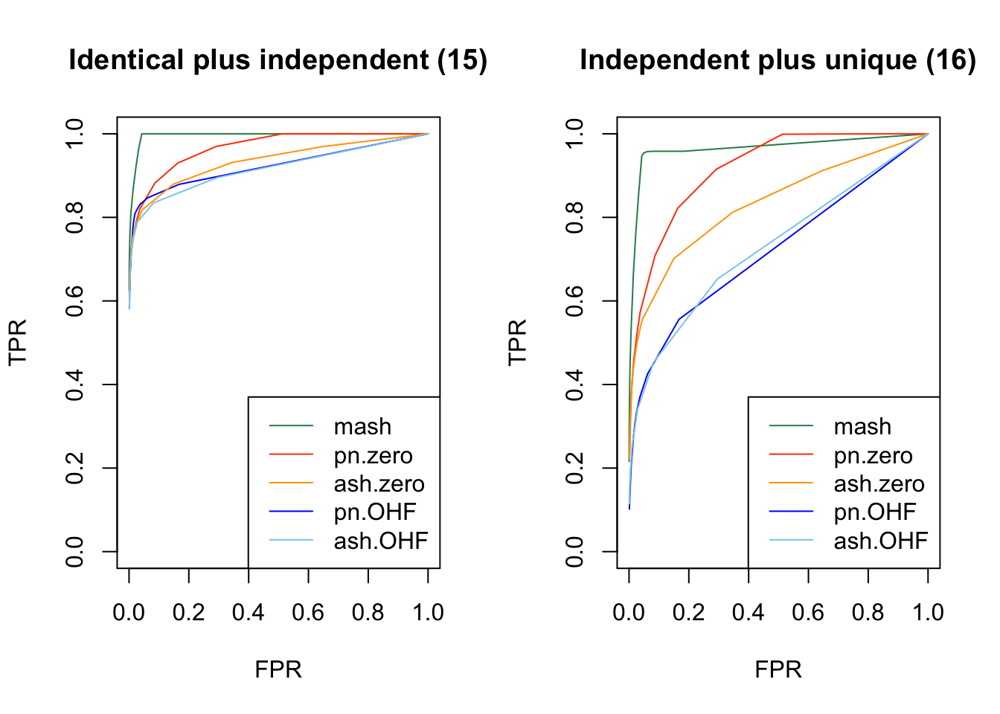
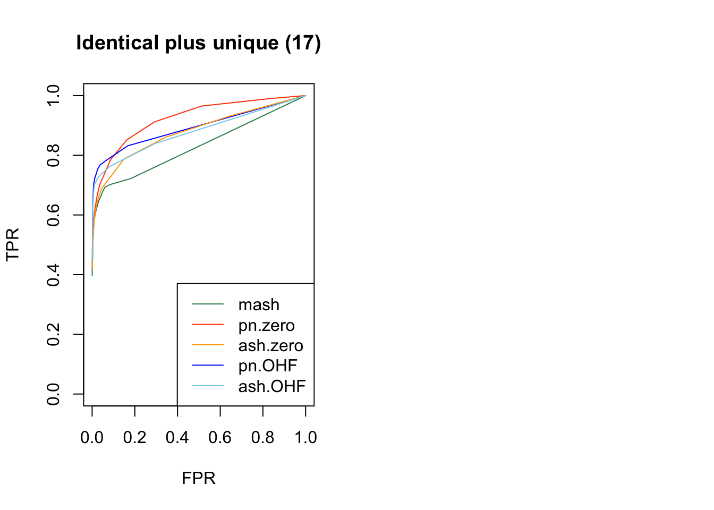

MASH v FLASH detailed simulation study
Last updated: 2018-08-05
workflowr checks: (Click a bullet for more information)-
✔ R Markdown file: up-to-date
Great! Since the R Markdown file has been committed to the Git repository, you know the exact version of the code that produced these results.
-
✔ Environment: empty
Great job! The global environment was empty. Objects defined in the global environment can affect the analysis in your R Markdown file in unknown ways. For reproduciblity it’s best to always run the code in an empty environment.
-
✔ Seed:
set.seed(20180609)The command
set.seed(20180609)was run prior to running the code in the R Markdown file. Setting a seed ensures that any results that rely on randomness, e.g. subsampling or permutations, are reproducible. -
✔ Session information: recorded
Great job! Recording the operating system, R version, and package versions is critical for reproducibility.
-
Great! You are using Git for version control. Tracking code development and connecting the code version to the results is critical for reproducibility. The version displayed above was the version of the Git repository at the time these results were generated.✔ Repository version: 4977a13
Note that you need to be careful to ensure that all relevant files for the analysis have been committed to Git prior to generating the results (you can usewflow_publishorwflow_git_commit). workflowr only checks the R Markdown file, but you know if there are other scripts or data files that it depends on. Below is the status of the Git repository when the results were generated:
Note that any generated files, e.g. HTML, png, CSS, etc., are not included in this status report because it is ok for generated content to have uncommitted changes.Ignored files: Ignored: .DS_Store Ignored: .Rhistory Ignored: .Rproj.user/ Ignored: data/ Ignored: docs/.DS_Store Ignored: docs/images/.DS_Store Ignored: docs/images/.Rapp.history Ignored: output/.DS_Store Ignored: output/.Rapp.history Ignored: output/MASHvFLASHgtex/.DS_Store Ignored: output/MASHvFLASHsims/.DS_Store Ignored: output/MASHvFLASHsims/backfit/.DS_Store Ignored: output/MASHvFLASHsims/backfit/.Rapp.history
Expand here to see past versions:
| File | Version | Author | Date | Message |
|---|---|---|---|---|
| Rmd | 4977a13 | Jason Willwerscheid | 2018-08-05 | wflow_publish(“analysis/MASHvFLASHsims2.Rmd”) |
| html | 59f8f12 | Jason Willwerscheid | 2018-07-30 | Build site. |
| html | 860aa52 | Jason Willwerscheid | 2018-07-22 | Build site. |
| Rmd | 3abd505 | Jason Willwerscheid | 2018-07-22 | wflow_publish(c(“analysis/MASHvFLASHsims.Rmd”, |
| html | 0a83e6c | Jason Willwerscheid | 2018-07-22 | Build site. |
| Rmd | 044fb97 | Jason Willwerscheid | 2018-07-22 | wflow_publish(“analysis/MASHvFLASHsims2.Rmd”) |
| html | 8720e9c | Jason Willwerscheid | 2018-07-01 | Build site. |
| Rmd | 1874a0d | Jason Willwerscheid | 2018-07-01 | wflow_publish(c(“analysis/MASHvFLASHgtex2.Rmd”, |
| html | 00ac712 | Jason Willwerscheid | 2018-06-26 | Build site. |
| Rmd | 81adb8c | Jason Willwerscheid | 2018-06-26 | wflow_publish(“analysis/MASHvFLASHsims2.Rmd”) |
| html | ce6e790 | Jason Willwerscheid | 2018-06-26 | Build site. |
| Rmd | 5d62591 | Jason Willwerscheid | 2018-06-26 | wflow_publish(“analysis/MASHvFLASHsims2.Rmd”) |
| html | e875bf9 | Jason Willwerscheid | 2018-06-24 | Build site. |
| Rmd | 7e4bbe0 | Jason Willwerscheid | 2018-06-24 | wflow_publish(c(“analysis/MASHvFLASHsims2.Rmd”)) |
| html | 97fa87c | Jason Willwerscheid | 2018-06-24 | Build site. |
| Rmd | 42cd89c | Jason Willwerscheid | 2018-06-24 | wflow_publish(c(“analysis/MASHvFLASHsims2.Rmd”, |
| html | 17ae3f3 | Jason Willwerscheid | 2018-06-24 | Build site. |
| Rmd | 411c3b4 | Jason Willwerscheid | 2018-06-24 | wflow_publish(“analysis/MASHvFLASHsims2.Rmd”) |
Introduction
Here I study simulations from a MASH model that extends the “model with independent, unique, and shared effects” from my larger simulation study. For the code used in this analysis, see below.
Simulations
I run 10 simulations, each of which simulates data for 20 conditions and 1200 tests. I use 17 different covariance structures, each of which are used to simulate 25 tests. The other 775 tests are null across all conditions.
Independent effects
Effects were nonnull for all conditions and generated independently from a \(N(0, \sigma^2)\) distribution. I simulated \((1)\) small independent effects (\(\sigma^2 = 2^2\)), \((2)\) large independent effects (\(\sigma^2 = 5^2\)), and \((3)\) independent effects of varying sizes (with \(\sigma^2\) ranging from \(1^2\) to \(5^2\)).
Notice that cases 1 and 2 are covered by “canonical” covariance matrices in MASH, but 3 is not.
Identical effects
Effects were nonnull for all conditions, with an effect size that was identical across conditions. The unique effect size was generated from a \(N(0, \sigma^2)\) distribution. Similar to the above, I simulated \((4)\) small identical effects (\(\sigma^2 = 2^2\)) and \((5)\) large identical effects (\(\sigma^2 = 5^2\)).
Both of these cases are covered by canonical covariance matrices in MASH.
Rank-one effects
These are similar to “identical effects” in that the covariance matrix has rank one (so that conditions 2-20 are always fixed multiples of condition 1), but here, the effect sizes vary.
\((6)\) The effect size for condition 1 was generated from a \(N(0, 1)\) distribution, and conditions 1-20 were multiples evenly spaced between 1 and 5.
Unlike identical effects, rank-one effects are not directly modeled by canonical covariance matrices.
Unique effects
Effects were nonnull in one condition only, with the nonnull effect simulated from a \(N(0, \sigma^2)\) distribution. I simulated \((7)\) small effects (\(\sigma^2 = 3^2\)) unique to condition 1 and \((8)\) large effects (\(\sigma^2 = 8^2\)) unique to condition 2.
These effects are directly modeled by canonical covariance matrices.
Random covariance
I included three random covariance structures in which effects were nonnull across all conditions. In each case the random covariance matrix \(A^T A\) was generated by sampling the entries of \(A\) independently from a \(N(0, 2^2)\) distribution. I included \((12)\) a rank-5 random covariance matrix (with \(A \in \mathbb{R}^{5 \times 44}\)), \((13)\) a rank-10 random covariance matrix \((A \in \mathbb{R}^{10 \times 44})\), and \((14)\) a full-rank random covariance matrix \((A \in \mathbb{R}^{44 \times 44})\).
Combinations of independent, identical, and unique effects
Finally, I included several combinations of the above types of effects. In particular, I simulated \((15)\) small identical effects (covariance type 4) plus large independent effects (type 2), \((16)\) small independent effects (type 1) plus a large unique effect (type 8), and \((17)\) small identical effects (type 4) plus a large unique effect (type 8).
Fitting methods
The fitting methods are identical to those described in my study of GTEx data.
Results
I pre-run the script below and load the results from file.
rrmses <- sqrt(readRDS("./output/MASHvFLASHsims2/mses.rds"))
pr <- readRDS("./output/MASHvFLASHsims2/pr.rds")RRMSE (nulls)
First I give a breakdown of the relative root mean-squared errors (that is, the RMSE for each fit object, divided by the RMSE that would be obtained by simply using the observed data \(Y\) to estimate the “true effects” \(X\)). In addition to calculating the RRMSE separately for each covariance type, I also separately consider null effects and nonnull effects.
MASH does much better in shrinking null effects towards zero for tests that are null across all conditions or that are unique to a single condition (covariance types 7-8). However, the OHF method much better on nulls when nonnull effects are of medium size and are shared across several conditions (types 9 and 11). Here, it is possibly relevant to recall that cases 7 and 8 are covered by canonical covariance matrices in MASH but cases 9 and 11 are not.
method.names <- c("pn.zero", "pn.OHF", "ash.zero", "ash.OHF", "mash")
plot.order <- c(5, 2, 4, 1, 3)
legend.args <- list(x="right", bty="n", inset=c(-0.25,0), xpd=T)
main.null <- list()
idx.null <- list()
names.null <- list()
main.null[[1]] <- "RRMSE for nulls (null/unique effects)"
idx.null[[1]] <- c(23, 7, 9)
names.null[[1]] <- c("null", "small (7)", "large (8)")
main.null[[2]] <- "RRMSE for nulls (shared effects)"
idx.null[[2]] <- c(11, 13, 15)
names.null[[2]] <- c("3 cond. (9)", "10 cond. (10)", "5 cond. (11)")
par(mar = c(5,4,4,6))
for (i in 1:length(main.null)) {
barplot(rrmses[plot.order, idx.null[[i]]],
names.arg = names.null[[i]], beside=T,
ylim=c(0, 1), ylab="RRMSE",
main=main.null[[i]], legend.text=method.names[plot.order],
args.legend=legend.args)
}
Expand here to see past versions of mse_null-1.png:
| Version | Author | Date |
|---|---|---|
| 59f8f12 | Jason Willwerscheid | 2018-07-30 |
| 0a83e6c | Jason Willwerscheid | 2018-07-22 |
| ce6e790 | Jason Willwerscheid | 2018-06-26 |
| 17ae3f3 | Jason Willwerscheid | 2018-06-24 |
Expand here to see past versions of mse_null-2.png:
| Version | Author | Date |
|---|---|---|
| 59f8f12 | Jason Willwerscheid | 2018-07-30 |
RRMSE (nonnulls)
Results for nonnull effects are more even. MASH generally does a bit better than FLASH, with the notable exception of type 17 (a combination of identical and unique effects) and the possible exception of unique effects (types 7-8).
main.nonnull <- list()
idx.nonnull <- list()
names.nonnull <- list()
main.nonnull[[1]] <- "RRMSE for independent effects"
idx.nonnull[[1]] <- 1:3
names.nonnull[[1]] <- c("small (1)", "large (2)", "various (3)")
main.nonnull[[2]] <- "RRMSE for identical and rank-1 effects"
idx.nonnull[[2]] <- 4:6
names.nonnull[[2]] <- c("sm. ident. (4)", "lg. ident. (5)", "rank-1 (6)")
main.nonnull[[3]] <- "RRMSE for unique effects"
idx.nonnull[[3]] <- c(8, 10)
names.nonnull[[3]] <- c("small (7)", "large (8)")
main.nonnull[[4]] <- "RRMSE for shared effects"
idx.nonnull[[4]] <- c(12, 14, 16)
names.nonnull[[4]] <- c("3 cond. (9)", "10 cond. (10)", "5 cond. (11)")
main.nonnull[[5]] <- "RRMSE for random covariance"
idx.nonnull[[5]] <- 17:19
names.nonnull[[5]] <- c("rank-5 (12)", "rank-10 (13)", "full-rank (14)")
main.nonnull[[6]] <- "RRMSE for combinations of effects"
idx.nonnull[[6]] <- 20:22
names.nonnull[[6]] <- c("ident. + ind.", "ind. + uniq.", "ident. + uniq.")
par(mar = c(5,4,4,6))
for (i in 1:length(main.nonnull)) {
barplot(rrmses[plot.order, idx.nonnull[[i]]],
names.arg = names.nonnull[[i]], beside=T,
ylim=c(0, 2), ylab="RRMSE",
main=main.nonnull[[i]], legend.text=method.names[plot.order],
args.legend=legend.args)
}
Expand here to see past versions of mse_nonnull-1.png:
| Version | Author | Date |
|---|---|---|
| 59f8f12 | Jason Willwerscheid | 2018-07-30 |
| 0a83e6c | Jason Willwerscheid | 2018-07-22 |
| ce6e790 | Jason Willwerscheid | 2018-06-26 |
| 17ae3f3 | Jason Willwerscheid | 2018-06-24 |

Expand here to see past versions of mse_nonnull-2.png:
| Version | Author | Date |
|---|---|---|
| 59f8f12 | Jason Willwerscheid | 2018-07-30 |
| 0a83e6c | Jason Willwerscheid | 2018-07-22 |
| ce6e790 | Jason Willwerscheid | 2018-06-26 |
| 17ae3f3 | Jason Willwerscheid | 2018-06-24 |
Expand here to see past versions of mse_nonnull-3.png:
| Version | Author | Date |
|---|---|---|
| 59f8f12 | Jason Willwerscheid | 2018-07-30 |
| 0a83e6c | Jason Willwerscheid | 2018-07-22 |
| ce6e790 | Jason Willwerscheid | 2018-06-26 |
| 17ae3f3 | Jason Willwerscheid | 2018-06-24 |
Expand here to see past versions of mse_nonnull-4.png:
| Version | Author | Date |
|---|---|---|
| 59f8f12 | Jason Willwerscheid | 2018-07-30 |
Expand here to see past versions of mse_nonnull-5.png:
| Version | Author | Date |
|---|---|---|
| 59f8f12 | Jason Willwerscheid | 2018-07-30 |
Expand here to see past versions of mse_nonnull-6.png:
| Version | Author | Date |
|---|---|---|
| 59f8f12 | Jason Willwerscheid | 2018-07-30 |
FPR/TPR
As in my previous simulation study, I evaluate true and false positive rates using the built-in function get_lfsr() for MASH and by simulating from the posterior for FLASH. For each covariance structure, I plot the true positive rate for a given covariance structure against the overall false positive rate.
Results are again fairly even, with a few exceptions where MASH clearly dominates FLASH. In particular, FLASH does poorly on independent effects (types 1-3) and randomly generated covariance structures (types 12-14)
get_fpr <- function(pr) {
nullidx <- c(7, 9, 11, 13, 15)
fp <- 25 * rowSums(pr[, nullidx]) + 775 * (pr[, 23])
fp / (25 * length(nullidx) + 775)
}
plot_fprvtpr <- function(idx, typename) {
colors <- c("orangered", "blue", "orange", "sky blue", "seagreen")
plot.order <- c(5, 1, 3, 2, 4)
plot(get_fpr(pr$mash), pr$mash[, idx], type='l',
col=colors[length(method.names)], lty=1,
xlab="FPR", ylab="TPR", ylim=c(0, 1), main=typename)
for (i in 1:(length(method.names) - 1)) {
next.pr <- pr[[method.names[i]]]
lines(get_fpr(next.pr), next.pr[, idx], col=colors[i], lty=1)
}
legend("bottomright", legend=method.names[plot.order],
col=colors[plot.order], lty=1)
}
par(mfrow=c(1, 2))
plot_fprvtpr(1, "Small independent (1)")
plot_fprvtpr(2, "Large independent (2)")
Expand here to see past versions of tpr-1.png:
| Version | Author | Date |
|---|---|---|
| 59f8f12 | Jason Willwerscheid | 2018-07-30 |
| 0a83e6c | Jason Willwerscheid | 2018-07-22 |
| ce6e790 | Jason Willwerscheid | 2018-06-26 |
| 17ae3f3 | Jason Willwerscheid | 2018-06-24 |
plot_fprvtpr(3, "Independent of varying size (3)")
plot_fprvtpr(6, "Rank-one (6)")Expand here to see past versions of tpr-2.png:
| Version | Author | Date |
|---|---|---|
| 59f8f12 | Jason Willwerscheid | 2018-07-30 |
| 0a83e6c | Jason Willwerscheid | 2018-07-22 |
| ce6e790 | Jason Willwerscheid | 2018-06-26 |
| 17ae3f3 | Jason Willwerscheid | 2018-06-24 |
plot_fprvtpr(4, "Small identical (4)")
plot_fprvtpr(5, "Large identical (5)")
Expand here to see past versions of tpr-3.png:
| Version | Author | Date |
|---|---|---|
| 59f8f12 | Jason Willwerscheid | 2018-07-30 |
| 0a83e6c | Jason Willwerscheid | 2018-07-22 |
| ce6e790 | Jason Willwerscheid | 2018-06-26 |
| 17ae3f3 | Jason Willwerscheid | 2018-06-24 |
plot_fprvtpr(8, "Small unique (7)")
plot_fprvtpr(10, "Large unique (8)")
Expand here to see past versions of tpr-4.png:
| Version | Author | Date |
|---|---|---|
| 59f8f12 | Jason Willwerscheid | 2018-07-30 |
| 0a83e6c | Jason Willwerscheid | 2018-07-22 |
| ce6e790 | Jason Willwerscheid | 2018-06-26 |
plot_fprvtpr(12, "Shared (3 conditions) (9)")
plot_fprvtpr(14, "Shared (10 conditions) (10)")
Expand here to see past versions of tpr-5.png:
| Version | Author | Date |
|---|---|---|
| 59f8f12 | Jason Willwerscheid | 2018-07-30 |
| 0a83e6c | Jason Willwerscheid | 2018-07-22 |
| ce6e790 | Jason Willwerscheid | 2018-06-26 |
plot_fprvtpr(16, "Shared (varying sizes) (11)")
plot_fprvtpr(17, "Random rank-5 (12)")
Expand here to see past versions of tpr-6.png:
| Version | Author | Date |
|---|---|---|
| 59f8f12 | Jason Willwerscheid | 2018-07-30 |
| 0a83e6c | Jason Willwerscheid | 2018-07-22 |
| ce6e790 | Jason Willwerscheid | 2018-06-26 |
plot_fprvtpr(18, "Random rank-10 (13)")
plot_fprvtpr(19, "Random full-rank (14)")
Expand here to see past versions of tpr-7.png:
| Version | Author | Date |
|---|---|---|
| 59f8f12 | Jason Willwerscheid | 2018-07-30 |
plot_fprvtpr(20, "Identical plus independent (15)")
plot_fprvtpr(21, "Independent plus unique (16)")
Expand here to see past versions of tpr-8.png:
| Version | Author | Date |
|---|---|---|
| 59f8f12 | Jason Willwerscheid | 2018-07-30 |
plot_fprvtpr(22, "Identical plus unique (17)")
Expand here to see past versions of tpr-9.png:
| Version | Author | Date |
|---|---|---|
| 59f8f12 | Jason Willwerscheid | 2018-07-30 |
Code
Click “Code” to view the code used to obtain the above results.
devtools::load_all("/Users/willwerscheid/GitHub/flashr/")
library(mashr)
source("./code/fits.R")
source("./code/sims.R")
source("./code/utils.R")
# Global parameters -----------------------------------------------------
n <- 20
p <- 1200
nsims <- 10
nsamp <- 200 # for sampling lfsr (FLASH fits)
ncol <- 25 # number of columns that exhibit each variance type
t <- 0.05 # "significance" threshold
# FLASH methods ---------------------------------------------------------
fl_fits <- c(function(fl_data) {fit_flash_zero(fl_data, Kmax = 50,
ebnm_fn = "ebnm_pn",
init_fn = "udv_si_svd",
backfit = FALSE,
warmstart = TRUE)},
function(fl_data) {fit_flash_OHF(fl_data, Kmax = 50,
ebnm_fn = "ebnm_pn",
init_fn = "udv_si_svd",
backfit = FALSE,
warmstart = TRUE)},
function(fl_data) {fit_flash_zero(fl_data, Kmax = 50,
ebnm_fn = "ebnm_ash",
init_fn = "udv_si_svd",
backfit = FALSE,
warmstart = TRUE)},
function(fl_data) {fit_flash_OHF(fl_data, Kmax = 50,
ebnm_fn = "ebnm_ash",
init_fn = "udv_si_svd",
backfit = FALSE,
warmstart = TRUE)})
fl_fit_names <- c("pn.zero", "pn.OHF", "ash.zero", "ash.OHF")
n_flmethods <- length(fl_fit_names)
# Covariance structures -------------------------------------------------
Sigma <- list()
# Independent (small)
Sigma[[1]] <- diag(2^2, n)
# Independent (large)
Sigma[[2]] <- diag(5^2, n)
# Independent (different sizes)
sizes <- seq(1, 5, length.out=n)
Sigma[[3]] <- diag(sizes^2)
# Identical (small)
Sigma[[4]] <- matrix(2^2, nrow=n, ncol=n)
# Identical (large)
Sigma[[5]] <- matrix(5^2, nrow=n, ncol=n)
# Rank-one
Sigma[[6]] <- outer(sizes, sizes)
zeros <- matrix(0, nrow=n, ncol=n)
for (j in 7:11) {
Sigma[[j]] <- zeros
}
# Unique (small)
uniqsmidx <- 1
Sigma[[7]][uniqsmidx, uniqsmidx] <- 3^2
# Unique (large)
uniqlgidx <- 2
Sigma[[8]][uniqlgidx, uniqlgidx] <- 8^2
# Shared (3 conditions)
shar3idx <- 3:5
Sigma[[9]][shar3idx, shar3idx] <- matrix(3^2, nrow=3, ncol=3)
# Shared (10 conditions)
shar10idx <- 1:10
Sigma[[10]][shar10idx, shar10idx] <- matrix(2^2, nrow=10, ncol=10)
# Shared (5 conditions, different sizes)
shar5idx <- 6:10
sizes <- seq(2, 4, length.out=5)
Sigma[[11]][shar5idx, shar5idx] <- outer(sizes, sizes)
# Rank-5
A <- matrix(rnorm(n*5, 0, 2), nrow=5, ncol=n)
Sigma[[12]] <- t(A) %*% A
# Rank-10
A <- matrix(rnorm(n*10, 0, 2), nrow=10, ncol=n)
Sigma[[13]] <- t(A) %*% A
# Random
A <- matrix(rnorm(n*n, 0, 2), nrow=n, ncol=n)
Sigma[[14]] <- t(A) %*% A
# Large independent plus small identical
Sigma[[15]] <- Sigma[[2]] + Sigma[[4]]
# Small independent plus large unique
Sigma[[16]] <- Sigma[[1]] + Sigma[[8]]
# Small identical plus large unique
Sigma[[17]] <- Sigma[[4]] + Sigma[[8]]
ntypes <- 17
# Variables for splitting up results by covariance structures -----------
partnames <- c("IndSm", "IndLg", "IndDiff",
"IdentSm", "IdentLg", "Rank1",
"UniqSmNull", "UniqSmNonnull",
"UniqLgNull", "UniqLgNonnull",
"Shar3Null", "Shar3Nonnull",
"Shar10Null", "Shar10Nonnull",
"Shar5Null", "Shar5Nonnull",
"Rank5", "Rank10", "Random",
"IndIdent", "IndUniq", "IdentUniq",
"Null")
partxidx <- list(1:n, 1:n, 1:n, 1:n, 1:n, 1:n,
setdiff(1:n, uniqsmidx), uniqsmidx,
setdiff(1:n, uniqlgidx), uniqlgidx,
setdiff(1:n, shar3idx), shar3idx,
setdiff(1:n, shar10idx), shar10idx,
setdiff(1:n, shar5idx), shar5idx,
1:n, 1:n, 1:n, 1:n, 1:n, 1:n, 1:n)
partyidx <- list(1:ncol, ncol + 1:ncol, 2*ncol + 1:ncol,
3*ncol + 1:ncol, 4*ncol + 1:ncol, 5*ncol + 1:ncol,
6*ncol + 1:ncol, 6*ncol + 1:ncol,
7*ncol + 1:ncol, 7*ncol + 1:ncol,
8*ncol + 1:ncol, 8*ncol + 1:ncol,
9*ncol + 1:ncol, 9*ncol + 1:ncol,
10*ncol + 1:ncol, 10*ncol + 1:ncol,
11*ncol + 1:ncol, 12*ncol + 1:ncol,
13*ncol + 1:ncol, 14*ncol + 1:ncol,
15*ncol + 1:ncol, 16*ncol + 1:ncol,
(17*ncol + 1):p)
nparts <- length(partnames)
partition_by_type <- function(X) {
# Splits up results by covariance type:
ret <- rep(0, nparts)
for (i in 1:nparts) {
ret[i] <- mean(X[partxidx[[i]], partyidx[[i]]])
}
names(ret) <- partnames
ret
}
# Variables for storing results -----------------------------------------
mses <- matrix(0, nrow = n_flmethods + 1, ncol = nparts)
ts <- c(seq(.005, .05, by=.005), seq(.06, .1, by=.01),
seq(.2, 1.0, by=.1))
pr <- list()
for (fl_fit in fl_fit_names) {
pr[[fl_fit]] <- matrix(0, nrow=length(ts), ncol=nparts)
}
pr$mash <- matrix(0, nrow=length(ts), ncol=nparts)
# Run simulations -------------------------------------------------------
for (i in 1:nsims) {
# Simulate dataset:
message(paste0("Simulating dataset #", i))
X <- matrix(0, nrow=n, ncol=p)
for (j in 1:ntypes) {
start_col = 1 + ncol*(j-1)
end_col = ncol*j
X[, start_col:end_col] <- t(MASS::mvrnorm(ncol, rep(0, n), Sigma[[j]]))
}
Y <- X + rnorm(n*p)
# Generate fits:
fl <- list()
for (j in 1:n_flmethods) {
method <- fl_fit_names[j]
message(paste("Fitting", method))
fit <- fl_fits[[j]](Y)
fl[[method]] <- fit$f
}
m <- fit_mash(Y)
# Do diagnostics:
base.se <- (Y - X)^2
base.mse <- partition_by_type(base.se)
for (j in 1:n_flmethods) {
method <- fl_fit_names[j]
fl.se <- (flash_get_fitted_values(fl[[method]]) - X)^2
fl.mse <- partition_by_type(fl.se) / base.mse
mses[j, ] <- mses[j, ] + fl.mse
message(paste("Sampling from", method))
fl.sampler <- flash_sampler(Y, fl[[method]], fixed="loadings")
fl.samp <- fl.sampler(nsamp)
fl.lfsr <- flash_lfsr(fl.samp)
for (k in 1:length(ts)) {
fl.signif <- fl.lfsr <= ts[k]
fl.pr <- partition_by_type(fl.signif)
pr[[method]][k, ] <- pr[[method]][k, ] + fl.pr
}
}
m.se <- (t(get_pm(m$m)) - X)^2
m.mse <- partition_by_type(m.se) / base.mse
mses[n_flmethods + 1, ] <- mses[n_flmethods + 1, ] + m.mse
m.lfsr <- t(get_lfsr(m$m))
for (k in 1:length(ts)) {
m.signif <- m.lfsr <= ts[k]
m.pr <- partition_by_type(m.signif)
pr$mash[k,] <- pr$mash[k,] + m.pr
}
}
# Average results over simulations --------------------------------------
mses <- mses / nsims
pr <- lapply(pr, function(method) {method / nsims})
saveRDS(mses, "./output/MASHvFLASHsims2/mses.rds")
saveRDS(pr, "./output/MASHvFLASHsims2/pr.rds")Session information
sessionInfo()R version 3.4.3 (2017-11-30)
Platform: x86_64-apple-darwin15.6.0 (64-bit)
Running under: macOS High Sierra 10.13.6
Matrix products: default
BLAS: /Library/Frameworks/R.framework/Versions/3.4/Resources/lib/libRblas.0.dylib
LAPACK: /Library/Frameworks/R.framework/Versions/3.4/Resources/lib/libRlapack.dylib
locale:
[1] en_US.UTF-8/en_US.UTF-8/en_US.UTF-8/C/en_US.UTF-8/en_US.UTF-8
attached base packages:
[1] stats graphics grDevices utils datasets methods base
loaded via a namespace (and not attached):
[1] workflowr_1.0.1 Rcpp_0.12.17 digest_0.6.15
[4] rprojroot_1.3-2 R.methodsS3_1.7.1 backports_1.1.2
[7] git2r_0.21.0 magrittr_1.5 evaluate_0.10.1
[10] stringi_1.1.6 whisker_0.3-2 R.oo_1.21.0
[13] R.utils_2.6.0 rmarkdown_1.8 tools_3.4.3
[16] stringr_1.3.0 yaml_2.1.17 compiler_3.4.3
[19] htmltools_0.3.6 knitr_1.20 This reproducible R Markdown analysis was created with workflowr 1.0.1